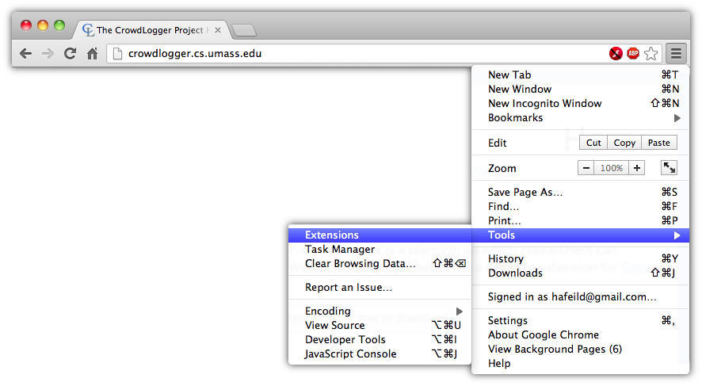
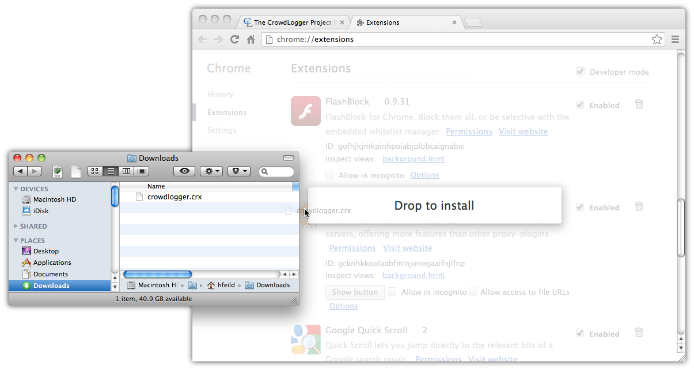

version %%VERSION%%
 Download
Download
To install %%PROJECT_NAME%%, follow the instructions below. After installing, the extension will open a configuration wizard that will guide you through setting things up.
Installing %%PROJECT_NAME%% for Firefox
Click the button and the installation will progress automatically:
Installing %%PROJECT_NAME%% for Chrome
Installation for Chrome requires a few steps:
- Download the %%PROJECT_NAME%% extension:
- Navigate to the download (called
crowdlogger.crx) in your downloads folder using, e.g., Windows Explorer (on Windows), Finder (on OSX), or whatever you'd like on Linux. - In Chrome, open the Extensions page by clicking on the configuration icon on the far right side of the navigation bar and choosing "Tools"→"Extensions", as shown below.

- Drag the
crowdlogger.crxdownload from you Downloads folder onto the Chrome Extensions page, as shown below.